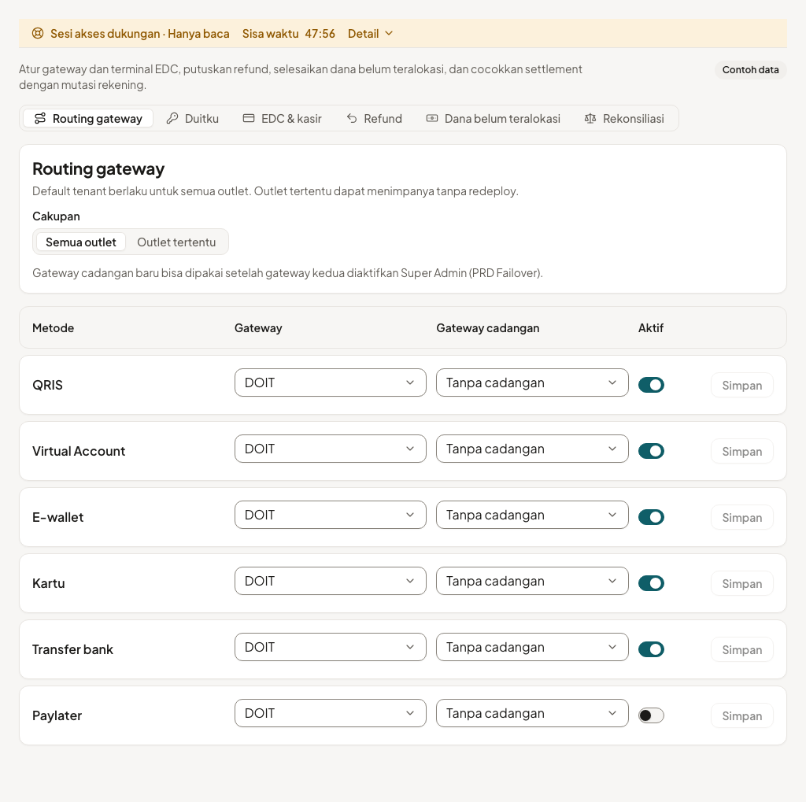
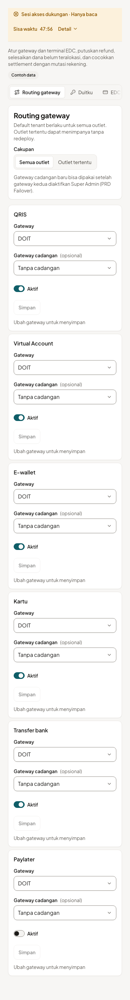
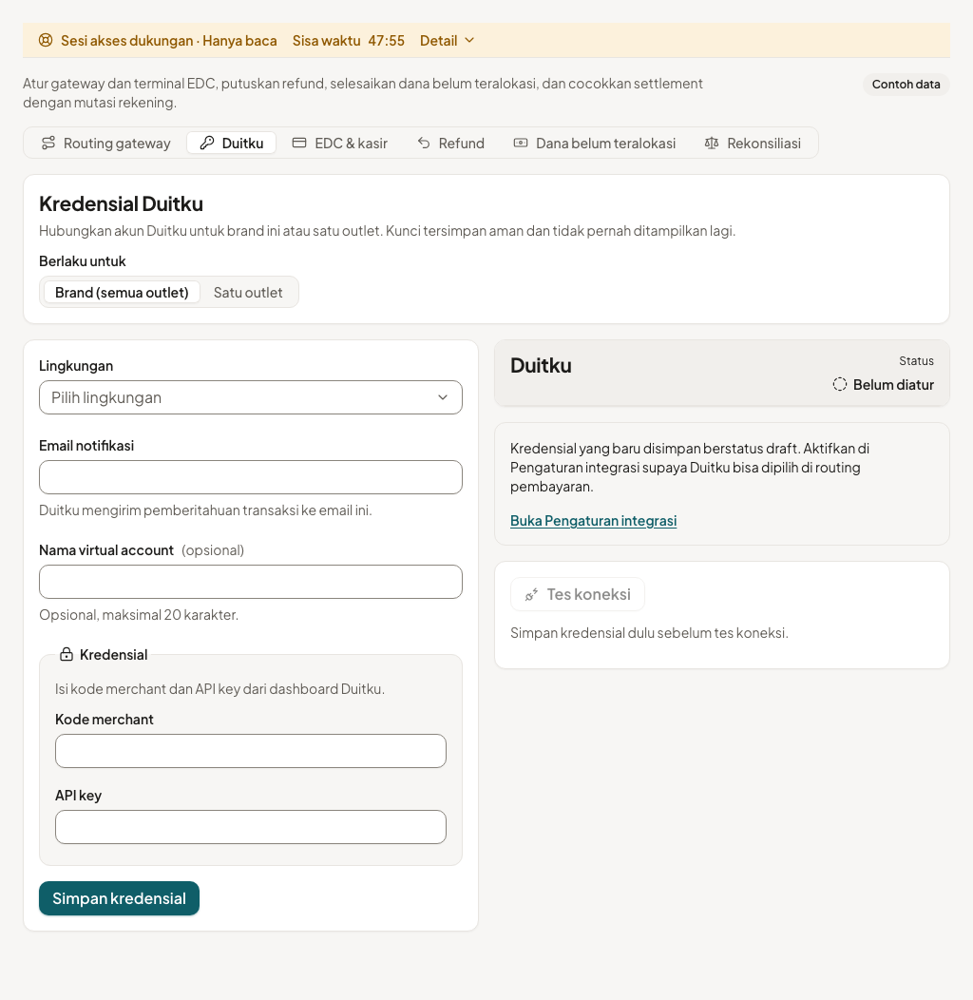
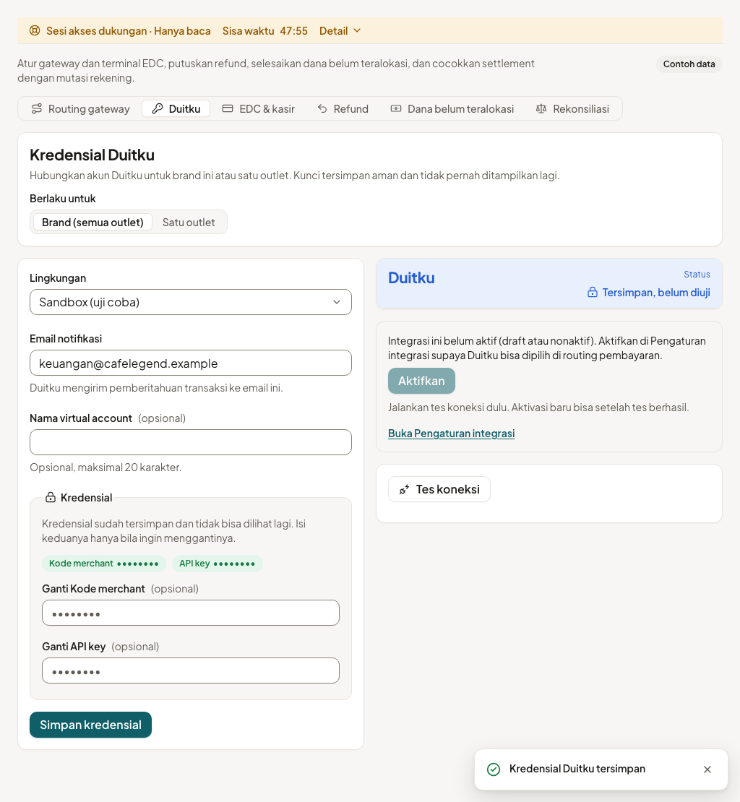
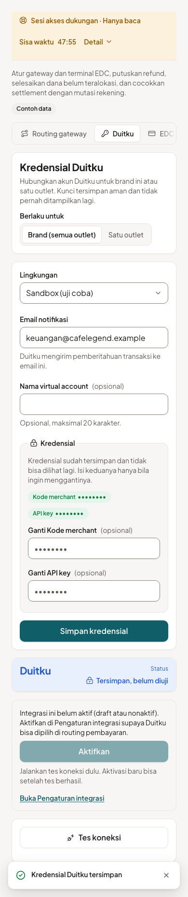
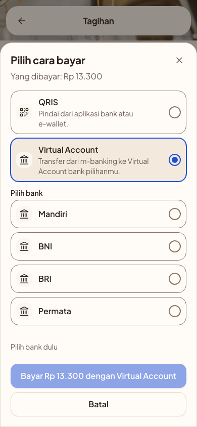
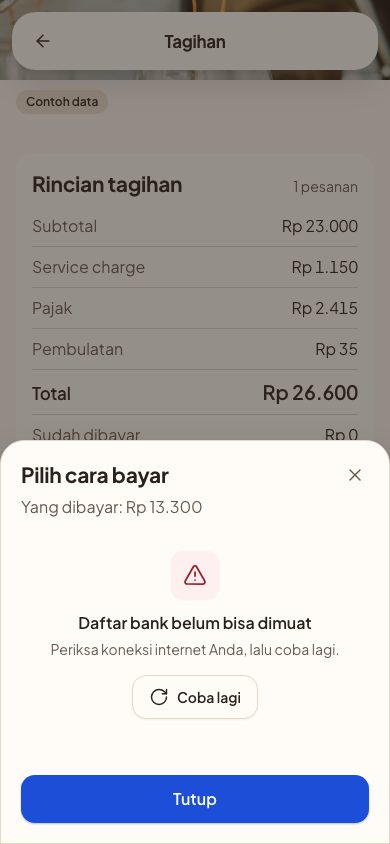
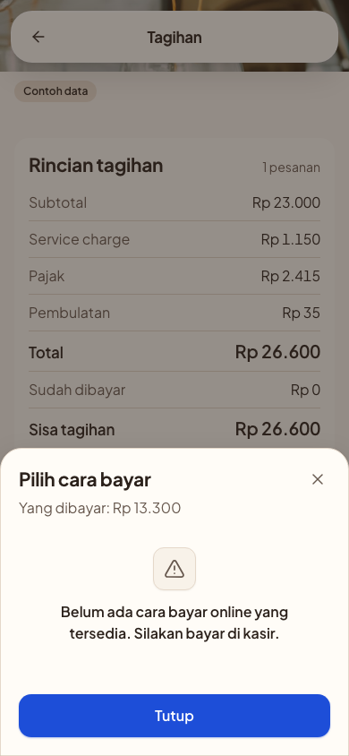
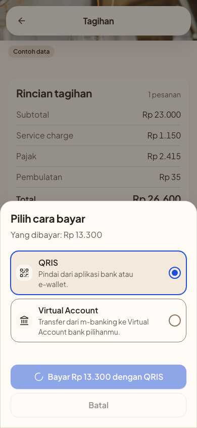

Pengaturan pembayaran Duitku dan bayar tamu
Dua hal untuk dilihat: layar pengaturan pembayaran untuk admin (nomor 945), dan layar bayar di HP tamu. Cukup lihat gambarnya, lalu jawab setuju atau minta diubah.
A. Pengaturan pembayaran (admin)
Admin mengatur cara bayar online per metode, dengan cadangan bila metode utama gagal. Kunci Duitku diisi per brand atau outlet. Tombol Tes koneksi dipakai untuk memastikan kunci benar. Tombol Aktifkan baru bisa dipakai setelah tes berhasil. Setelah disimpan, kunci tidak pernah ditampilkan ulang, hanya tanda bahwa kunci sudah tersimpan.
1. Routing per metode dengan cadangan
Tiap metode bayar (e-wallet, kartu, virtual account) punya urutan penyedia dan cadangan. Bila penyedia utama gagal, sistem pindah ke cadangan.


2. Form kunci Duitku, tes koneksi, dan aktivasi
Form kunci per brand atau outlet. Keadaan yang perlu dilihat: belum dites, tes sukses (boleh aktifkan), dan sudah tersimpan (kunci disembunyikan).



Belum ada gambar tes sukses dan tombol Aktifkan menyala. Contoh data belum punya jawaban untuk Tes koneksi, jadi keadaan itu belum bisa difoto. Perlu tambahan kecil di data contoh.
Bila memilih Perlu ubah, tulis layar mana dan maunya bagaimana di kotak catatan.
B. Bayar dari HP tamu
Tamu yang memesan lewat HP memilih cara bayar online. Layar meminta tamu Pilih bank dulu bila metodenya bank. Bila tidak ada cara bayar online yang bisa dipakai, layar memberi tahu tamu untuk membayar di kasir. Catatan: pilihan e-wallet dan kartu baru muncul setelah backend Duitku untuk tamu selesai. Gambar di bawah memakai contoh data, bukan transaksi sungguhan.
1. Pilihan bayar dan pilih bank


2. Keadaan gagal dan kosong
Bila tidak ada cara bayar online, tamu melihat tulisan: Belum ada cara bayar online yang tersedia. Silakan bayar di kasir.



Bila memilih Perlu ubah, tulis layar mana dan maunya bagaimana di kotak catatan.